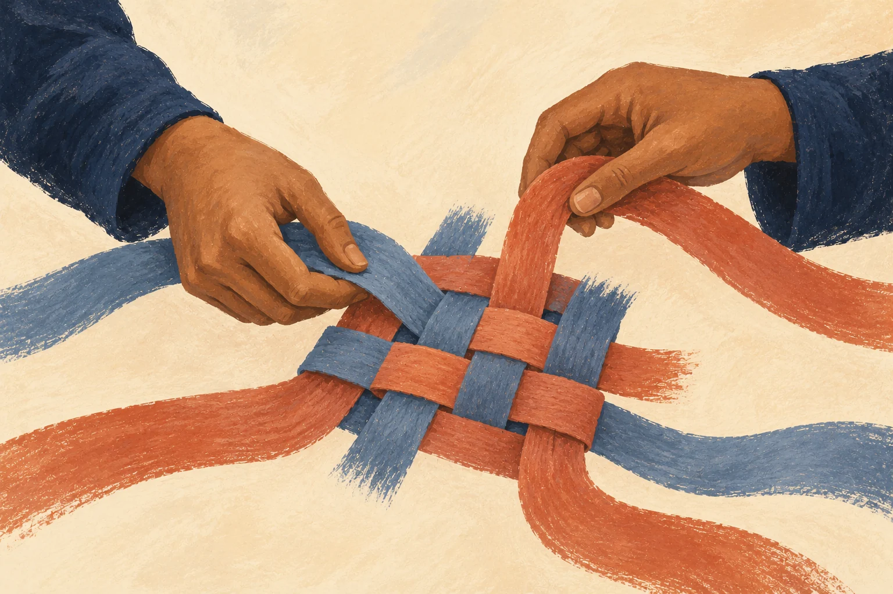
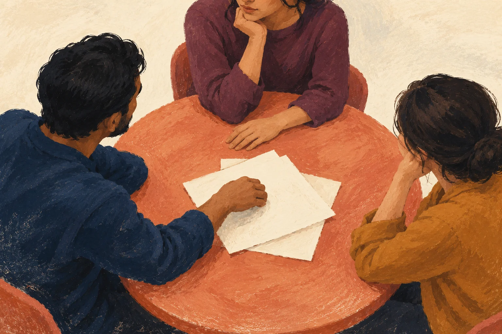
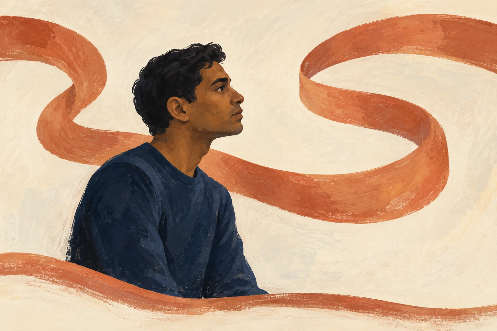
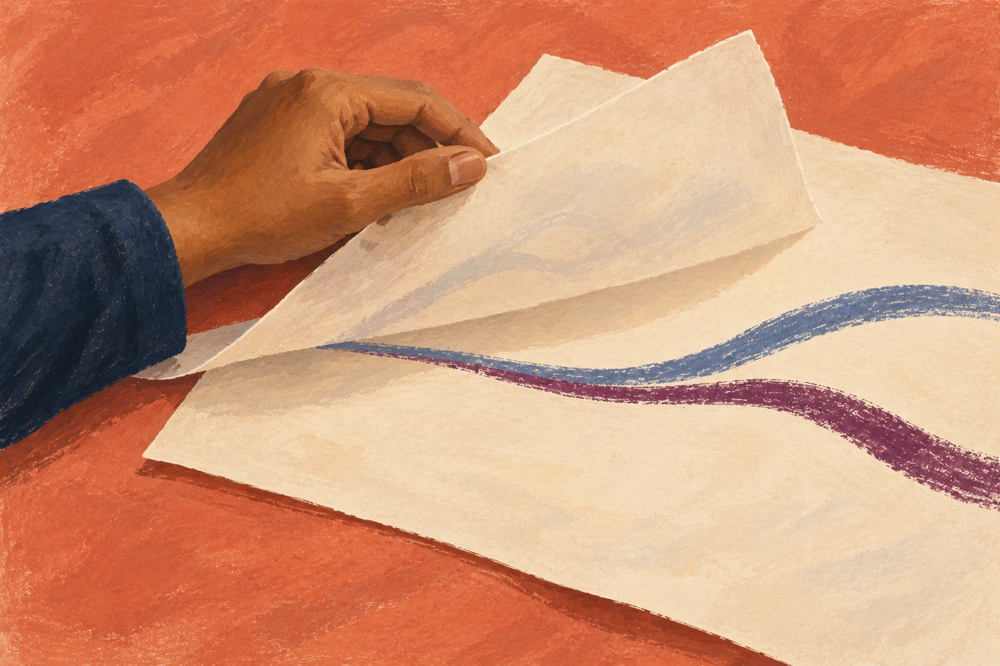
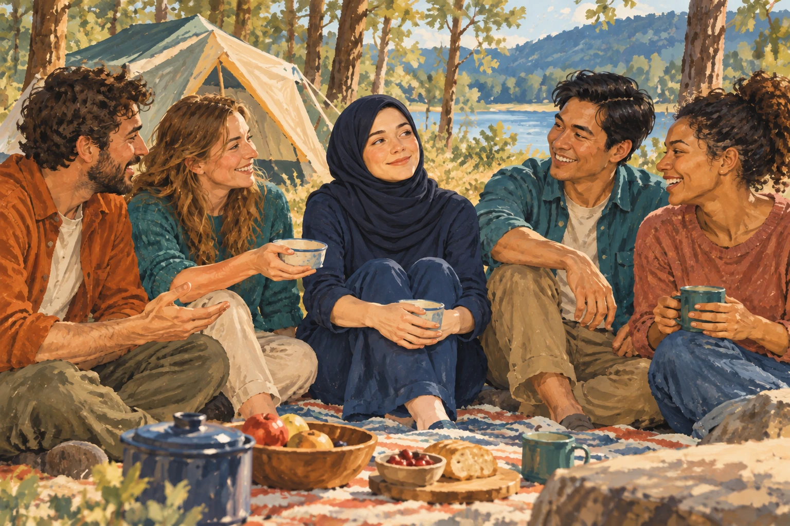
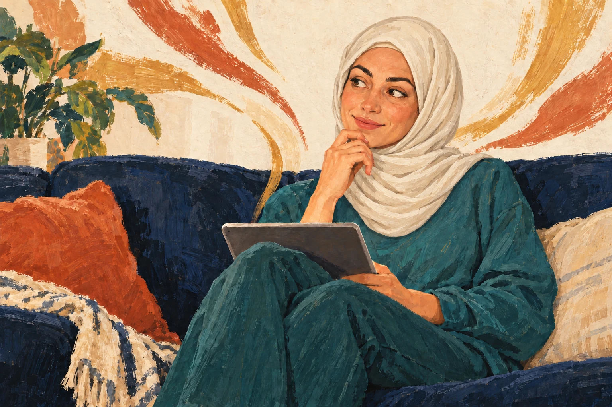
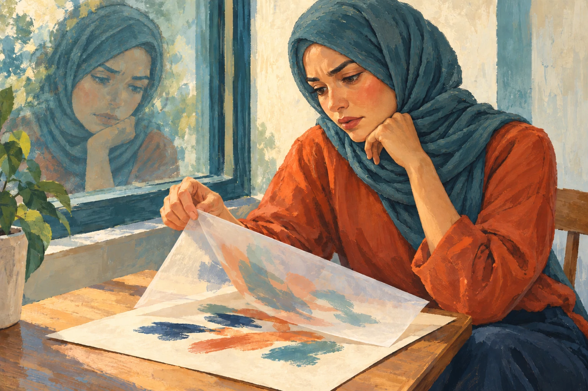

سفر
جب ہر چیز سوال بننے لگی
کہانی، باب در باب۔
میں ان سوالوں کے باہر کھڑا کوئی مبصر نہیں، خود اسی سفر کا ایک طالب علم ہوں۔
باب اوّل اس دور سے شروع ہوتا ہے جب زندگی کے مختلف حصے ایک جگہ آتے ہوئے محسوس ہونے لگے۔ نئی تحریریں اسی وقت یہاں شامل ہوں گی جب وہ واقعی لکھی جائیں گی۔

باب اوّل · تحریر 01
مجھے لگا تھا، اپنی جگہ مل گئی
سیکھنے، سائنسی کام اور دین کے درمیان ایک بامعنی تعلق کا امکان۔
تحریر 01 پڑھیے ←
باب اوّل · تحریر 02
قریب آئی تو منظر بدلنے لگا
جن سے علم لیا تھا، ان کے ساتھ کام کرنے پر پیدا ہونے والا ایک نیا سوال۔
تحریر 02 پڑھیے ←
باب اوّل · تحریر 03
پھر نفسیات کے ایک لیکچر نے کچھ اور ہلا دیا
ایک مربوط سائنسی وضاحت سننے کے بعد، اپنے ہی یقین کے بارے میں پیدا ہونے والے خوف کی روداد۔
تحریر 03 پڑھیے ←
باب اوّل · تحریر 04
سائنس کی بات کہاں تک تھی؟
ایک مربوط دلیل کو دوبارہ دیکھتے ہوئے، وضاحت اور اس سے اخذ کیے گئے نتیجے کے درمیان ابھرنے والا سوال۔
تحریر 04 پڑھیے ←
باب اوّل · تحریر 05
لوگوں کے درمیان ایک پورا دن
عجیب بات یہ ہے کہ وہ دن اچھا گزرا تھا۔
تحریر 05 پڑھیے ←
باب اوّل · تحریر 06
مجھے لگتا تھا، فلسفہ فلسفیوں کا کام ہے
فلسفہ پڑھنے کا کوئی ارادہ نہیں کیا تھا۔
تحریر 06 پڑھیے ←
باب اوّل · تحریر 07
اصل ماخذ میں کیا تھا، اور میں اپنی طرف سے کیا لے کر آ رہی تھی؟
فلسفہ پڑھنا شروع کیا تو ایک قدرے جھنجھلا دینے والی بات ہوئی۔
تحریر 07 پڑھیے ←